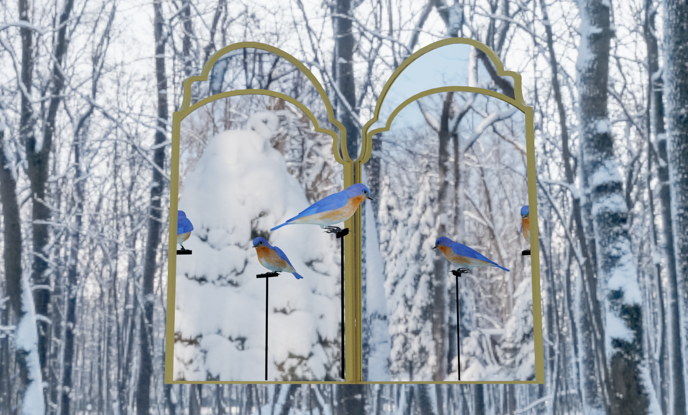
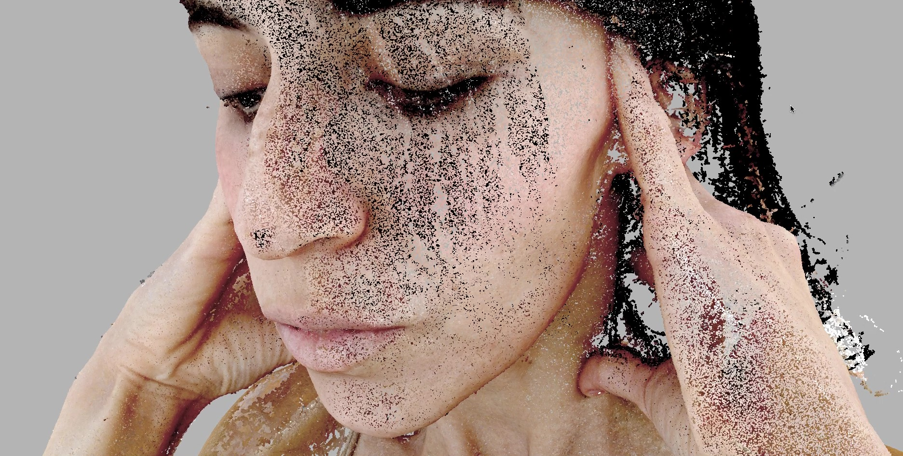
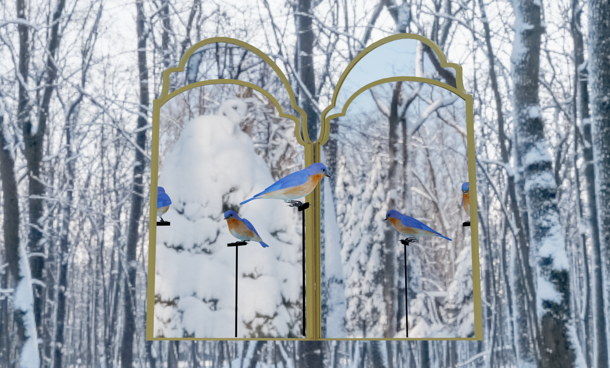
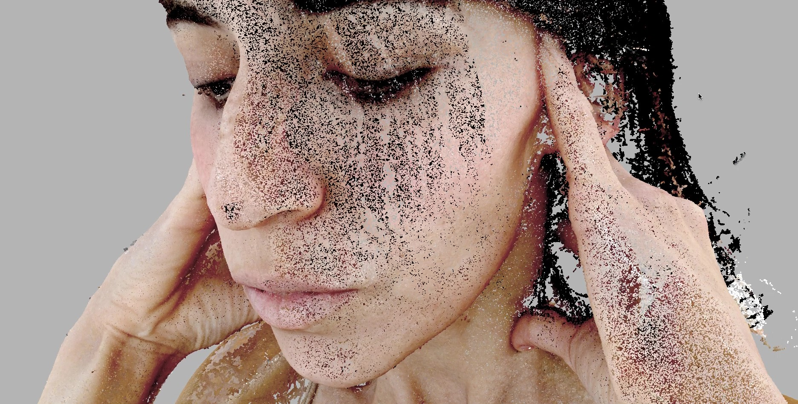

Luna Laff: Talleres Lowbudget
Worlding es la construcción, configuración y conceptualización de un mundo o de una realidad habitable en materialidad virtual a través de animaciones, videojuegos o AR/VR.
Se trabajará desde la construcción del espacio hasta la constitución de un mundo que presente verosimilitud y coherencia dentro de su propia virtualidad. Esto les entregará conocimiento y estrategias de desarrollo conceptual para su constitución como habilidades para modelar y componer una escena en 3D.
El curso de Worlding: composición de mundos, aborda las bases de modelado 3D, composición en el espacio y conceptualización de un mundo construido en el programa Blender. Worlding busca responder a las necesidades profesionales de artistas, diseñadores, comunicadores audiovisuales y áreas afines de adquirir conocimientos, habilidades, herramientas y metodologías para representar sus ideas de mundos o espacios en 3D.
Fecha de inicio: Martes 16 de Abril, 19 hrs a 21:30 hrs. Fecha de cierre: Martes 21 de Mayo
cupos: 8
clases: Una vez a la semana, por 6 semanas, cada clase de 2 horas.
valor: 55.000 en pago único y 10.000 pago clase a clase.
modalidad online y última sesión presencial.
Un grupo de estudio autoral es una instancia de diálogo entre varios artistas y creativos que discuten y presentan su desarrollo práctico y/o teórico al grupo, con el objetivo de poder recibir y entregar feedback de lo que se pueda observar. Este curso tiene como objetivo entregar estrategias de desarrollo e investigación para la creación de obra o proyectos, mientras que clase a clase, se estipula un espacio de conversación y diálogo frente a las temáticas de interés, descubrimientos, referencias y el avance de cada integrante.
Fecha de inicio: Lunes 29 de Abril // Jueves 2 de Mayo Fecha de cierre: Lunes 3 de Junio // Jueves 6 de Junio
Horarios disponibles: Lunes 10AM o Jueves 6PM
secciones: 2 (según horario a convenir)
cupos: 6
clases: Una vez a la semana, por 6 semanas, cada clase de 2 a 3 horas.
valor: 55.000 en pago único y 10.000 pago clase a clase.
modalidad presencial.Clase introductoria al programa Agisoft Metashape por medio del ejercicio de hacer una fotogrametría de un objeto seleccionado. Proximamente...
Clase pedagógica sobre procesos de trabajo fluidos entre diferentes softwares. Proximamente...
WORLDING: Composición de mundos
Grupo de estudio autoral: Estrategias de desarrollo de obra
Introducción a Fotogrametría
MixMedia: flujos de trabajo mixtos